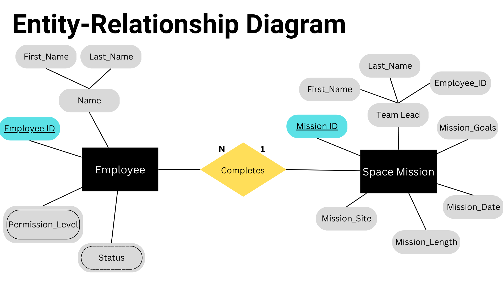
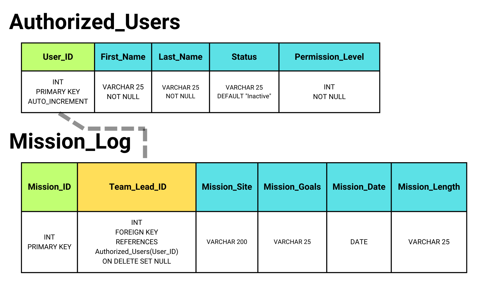
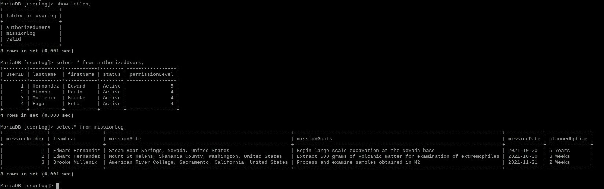

Maria DB SQL Web Server w/ Integrated API For NASA Rovers
Project Description
NASA plans to return to the moon for further exploratory research in 2025 as part of its Artemis program. For those missions, they will be deploying autonomous robotic vehicles to explore the moons surface and record other information for scientific research. My part in this project is to provide a unified database for these various robotic units to log data. The requirements for the database were as follows:
- All databases must only be accessible by specific personnel
- Each authorized user must only have access to specific information sets
- All database configurations must be optimized for maximum data storage
- All databases should be constructed as simply as possible
Upon considering all these requirements I started the project by constructing the entity relationship diagrams for all tables in the database. For this project we would need one table to store authorized users and another table to log the missions details. The result is as follows:
As described above, we anticipated that any mission could require any number of employees, but that each employee would only be assigned to one mission. For the primary key for both the employee and mission information entities, I would implement a simple integer ID number. The employee information table has a derived attribute named "Status" that is set to "Active" if the employee has a permission level greater than 0, and is "Inactive" if their permission level is 0. The mission information table would also have a team leader whose employee ID number would serve as a foreign key referencing the employee table.
After validating this with my team, I converted the ER diagram into a Database Schema where I planned the tables data types, relevant constraints, delete conditions, and default values. The result is as follows:
With the use of the FOREIGN KEY and PRIMARY KEY SQL constraints, we ensure that the values cannot be NULL and must be unique. We also use the AUTO_INCREMENT SQL function to get the database to automatatically generate and keep track of new ID numbers. We use ON DELETE SET NULL for the foreign key in the Mission Log table to safely handle the records in the case of employee's leaving the program. We also limit the characters for VARCHAR data types by reasonable values.
Now we can turn this schema into code. I chose to use MariaDB for this project and implemented this on a Raspberry Pi microcomputer using the Raspbian Linux OS. I filled the initial tables with test data on my team for an example:
Note that the mission log table uses the employee name instead of their ID number. This occured because we were running short on time and we could not get our ID number system synchronized among several other projects that the program was pursuing. The "valid" table is explained in the next step of the project.
Now that we have the database up and running, we need to make it accessible to our employees. My idea to accomplish this was to augment the Raspberry Pi into a web server that would allow all in the LAN to access the database through a web application. To do this I set up the main server in Node.js and created an extra data table in the database named "valid" containing username and password credentials for my team members. I also connected the MariaDB database to the server on the backend using a .env file to securely store the databases login credentials. When my team would access the web server they would be prompted to provide their log in details on the landing page before gaining access to the database. The resulting homepage of the web app is shown below:

To verify user log in requests, I programmed JavaScript code that would parse the HTML Post request generated after the user clicked the "Log In" button into an SQL query that would search the "valid" data table for a match on the posted username and password. If there was a match, the SQL query would return the permission number for that employee, add that cookie to their session, and bring the employee to their customized data dashboard. From the dashboard they would be presented with mission information relevant to their team and would then have access to query the databases according to their permission level.
All queries are managed by using the same Post request parsing method. For common data operations, such as search queries on the mission information table, I also implemented an intuitive web form that allowed users to quickly and easily execute these tasks. I also added sorting features to allow mission data to be displayed by most recent or within specified date intervals with just a click of a button.
To enforce the permission level system, during each access of the database, the server would first check the users permission level cookie. Before the server passed back any data, it would compare the users permission cookie to the permission values of the queries results, and only send back data that had a lower or equivalent permission level. If there were no matches, the page would simply return no data and the user would see a message saying the query found no results.
One satisfying result of this system is that adding a new employee to the whole system is as easy as adding them into the employee table and making new log in credentials for them in the "valid" table. The server handles all the rest.
The last addition to this project was the implementation of an API. We planned to develop the API to allow for updating and deleting entries from the database through the web app instead of only using it for retrieval queries. Unfortunately, we only had time to implement simple data fetching functionality. The API provided a streamlined way to read out all data in our mission information table as a json document. We planned to use this to create back up databases or otherwise make the research information from the Artemis program available to the general scientific community. This was the extent of the API and finishes this project.
- Technologies Used:
- SQL with MariaDB
- Javascript with Node.js & Express.js
- Data Servers with Node.js
- Linux OS
- Web Traffic Routing
Below is a code breakdown of how the server and database interact, as well as some od the administrative measures I added behind the scenes to ensure proper server activity.
Main Server File (Node.js, Express.js, SQL with MariaDB)
This is the main file for the SQL Web Database server that sets up the connection to the MariaDB SQL Database, sets up the API for the DB, and processes/returns user web queries into the DB onto the main webpage
//Include packages
const express= require('express')
const app =express()
const {missionData} = require('./missionData')
//Set up DB login credentials
const mysql = require('mysql')
const session = require('express-session')
//.env stores login credentials to the databases
require('dotenv').config()
const path= require('path')
const server=require('http').Server(app)
const urlencodedParser = express.urlencoded({extended:false})
app.use(express.urlencoded({extended: false}))
app.use(express.json())
//Middleware for the administrator to view server activity
const dataLog = (req,res,next)=>{
const time = new Date()
console.log("-----------------")
console.log("Visit: "+req.url)
console.log("Time:")
console.log(time)
next()
app.use(dataLog)
//Use the public folder to hold all html and css documents
app.use(express.static('public'))
app.use("/css",express.static(__dirname+ "public/css"))
//Set the view engine to ejs
app.set('views','./views')
app.set('view engine', 'ejs')
//Code below creates a connection to the MariaDB database
const pool = mysql.createPool({
connectionLimit: 100,
host: process.env.HOST,
user: 'root',
password: process.env.DATAP,
database: process.env.DATABASE
});
//Below attempts to connect to the database with the information above
pool.getConnection((err, connection)=>{
if(err) throw err;
console.log("Database Connected, ID:" + connection.threadId)
})
app.get('/api/missionInformation',(req,res)=>{
res.json(missionData)
})
//Route parameter method to query the api for certain missions
app.get('/api/missionInformation/:missionNumber', (req,res)=>{
const {missionNumber} = req.params
const singleMission=missionData.find((mission) => mission.MissionNumber === Number(missionNumber))
if(!singleMission){
return res.status(404).send("Mission Number Does Not Exist")
}
res.json(singleMission)
})
//Query String
app.get('/api/query',dataLog,(req,res)=>{
const {search,limit}=req.query
let sortedMissions=[...missionData]
if (search){
sortedMissions=sortedMissions.filter((mission)=>{
return mission.TeamLeader.startsWith(search)
})
}
if(limit){
sortedMissions=sortedMissions.slice(0,Number(limit))
}
if(sortedMissions<1){
return res.status(200).send("No Missions matched the search")
}
res.status(200).json(sortedMissions)
})
//Testing routes for a json api
app.get('/api',(req,res)=>{
res.send(missionData)
})